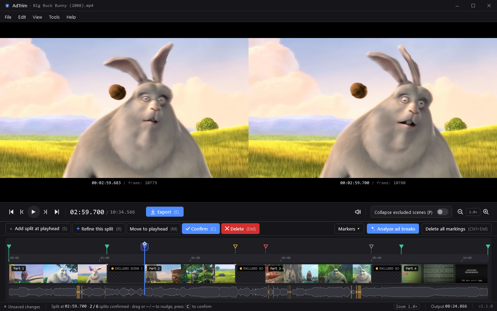
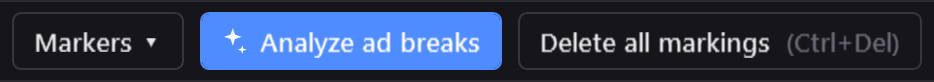
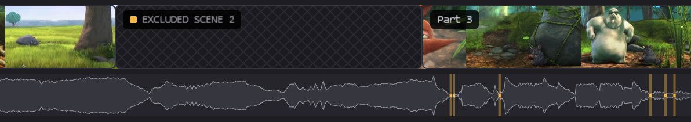
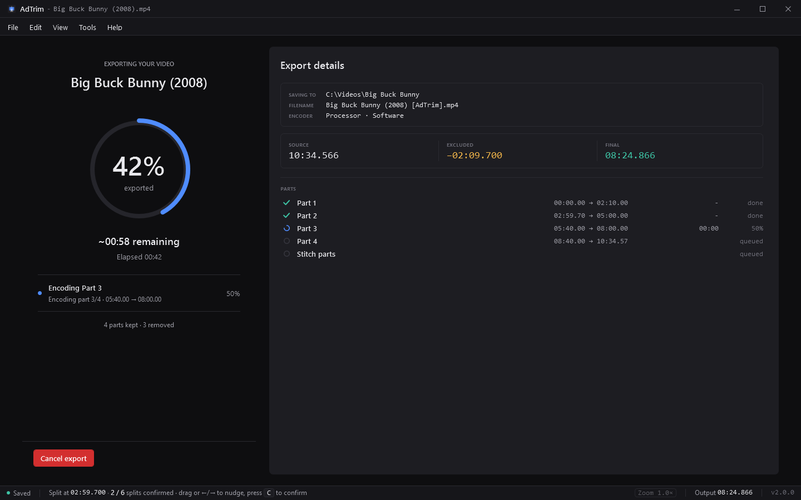

Cut the commercials. Keep the show.
A frame-accurate, non-destructive editor for trimming ad breaks out of recorded TV, for the kind of people who hand-curate a media library.
Windows 10 (21H2 or newer) and 11, 64-bit. Free and open source.

Most ad-trim workflows are destructive, slow, and approximate. This one isn't.
27ms
Scrubbing that keeps up with you
A typical scrub takes 27 ms, even on a long recording over a home network, and even while thumbnails and the waveform are still loading. A recording is ready to edit about 0.6 s after you open it.
1frame
Cuts on the exact frame
Splits land on real frames and are stored to the microsecond. Step one frame at a time with , and . until the cut sits between the last frame of the show and the first frame of the ad, or press R and AdTrim finds the cleanest cut nearby.
0bytes
Your original video and audio stay intact
Your edits live in a small .adt.json file next to the recording. Export writes a separate MP4 or TS file. Video and audio in the original stay intact. MP4 sources can receive an optional export marker in Windows Comments; TS sources use the project sidecar only.
Timings measured with a 2.0 test build on one 110-minute, 8 GB recording stored on a home network share. The opening time is from a first open; the scrub time is from after the share had read the file once. Your times depend on your drive and network.
How an edit goes
-
Start from markers
Recordings that already have chapters, such as those from Plex DVR's commercial detection, open with those chapters as markers.

Without them, Analyze ad breaks looks at the picture and the sound and suggests where the breaks are. Suggestions are markers to check, not cuts. Nothing is removed until you choose to remove it, and markers it isn't sure about are red.
-
Check each cut by eye and ear
The thumbnails show what's in each section. The waveform marks silences in amber, where breaks tend to start and end.

- Select a split to see the frames on both sides of it, side by side.
- P collapses the excluded scenes, so you play only what you're keeping and hear every join before you export.
-
Export a new file

AdTrim joins the parts you keep into one MP4 or TS file, saved next to the recording with [AdTrim] added to its name.
Audio is copied from the recording, not re-encoded. MP4 keeps chapter markers and names; TS exports omit chapters. Your last format choice is remembered. Other recording windows stay usable while one exports.
Built for the people who actually watch the library.
Made for Plex and Jellyfin libraries
The exported copy keeps your recording's name, with the show, season and episode intact, and adds [AdTrim] so you can tell it from the original in the folder.
RecordingDrama Series (2024) - s02e07 - Midpoint.mp4
ExportDrama Series (2024) - s02e07 - Midpoint [AdTrim].mp4
Section names become chapters
Name a section with F2 and it becomes a chapter in the exported MP4, so you can jump to it in your player.
Uses your graphics card
Export with a supported NVIDIA, Intel or AMD graphics card, or with your processor. Evaluate options tests each one on your computer and shows which is fastest.
Several recordings at once
Each recording opens in its own window. Export one while you keep editing another.
Saves as you go
Edits save in the background while you work, with undo and redo.
Made for the keyboard
You can do a whole edit without the mouse. Press F1 in AdTrim for every shortcut.
- Space
- Play or pause
- J K L
- Rewind, pause, play forward
- , .
- Previous or next frame
- [ ]
- Back or forward one second
- S
- Add a split at the playhead
- R
- Refine the selected splits
- C
- Confirm the selected splits
- Shift+C
- Confirm, then go to the next unconfirmed split
- X
- Exclude or include the selected section
- P
- Collapse excluded scenes
- F2
- Rename the selected section
- E
- Export
Your recordings stay on your computer
AdTrim doesn't collect usage data or upload your recordings, file names or hardware details. To check for updates, it downloads release information from GitHub Pages and compares versions on your computer. GitHub Pages logs IP addresses for security (GitHub's data collection notice).
Automatic checks are on by default. Turn them off during setup or under Help > Automatically check for updates. That also stops automatic security alerts; Help > Check for updates still works whenever you use it.
AdTrim v1.0.0000
Free and open source. No ads, no bundled junk, no telemetry, and no account required. Your videos stay on your computer.